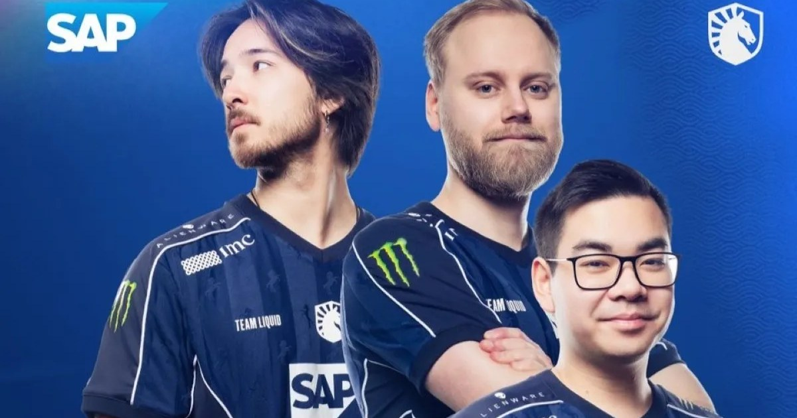

Team Liquid sweep the favourites to reach the BLAST Slam IX grand final — 1W knock out PARIVISION
Team Liquid came through Last Chance to reach the BLAST Slam IX playoffs — and on Saturday they swept previously unbeaten Team Yandex to become the first team into the grand final, while 1W Team ended PARIVISION's run in the lower bracket.

Disclosure: this post contains affiliate links. I earn a commission on qualifying purchases.
Three teams are left standing at BLAST Slam IX, and the first grand finalist is the team that nearly didn't make the playoffs at all. Team Liquid swept Team Yandex in Saturday's upper bracket final, and 1W Team followed it with a sweep of their own to eliminate PARIVISION — setting up a final day on Sunday with the $750,000 tournament down to its last three teams.
Liquid made the favourites look ordinary
Yandex arrived at the upper bracket final as the team to beat: four series played, four won, with a single game dropped all tournament. Liquid arrived with momentum instead — fresh off beating PARIVISION in the upper bracket semifinals, and having fought through the Last Chance stage just to reach the playoffs.
Game one turned on the laning stage. Yandex built their draft around an ATF Huskar meant to take over the mid game, with Watson on Kez and CHIRA_JUNIOR on Sand King. Liquid answered with pace — miCKe on Riki, Malr1ne on Earthshaker, Wisper on Dark Seer, Boxi on a support Weaver and tOfu on Winter Wyvern — and shut ATF down early, forcing him to spend the mid game farming while Liquid took the map. Yandex never found the fight that could swing it back, and called GG after 52 minutes. MiCKe paced the 32-13 kill scoreline with 10 kills and 14 assists against a single death.
Yandex drafted for tempo again in game two — Watson back on Kez, CHIRA_JUNIOR on Invoker, ATF on Beastmaster — and this time the faster power spike worked, giving them control of the mid game. It held until the teamfights turned chaotic. TOfu's Winter Wyvern kept breaking up Yandex's initiations, opening the door for miCKe's Monkey King and Malr1ne's Primal Beast to take over the fights, and Liquid broke through after 54 minutes to complete the sweep. MiCKe finished with 12 kills and 23 assists, and Liquid are now one series from their first title of the 2026-2027 season.
1W ended PARIVISION's tournament in straight games
The lower bracket semifinal was an elimination match, and PARIVISION — still reeling from the Liquid loss — opened with invention: a support Slark for 9Class, played as an initiator ahead of Satanic's Weaver, No[o]ne's Dragon Knight and Noticed's Beastmaster. It worked in the skirmishes. PARIVISION picked 1W apart from the laning stage into the mid game, and only started losing when the fights became five-on-five — exactly where 33's Brewmaster and 1W's teamfight draft wanted the game. PARIVISION called GG just before the 40-minute mark, with bzm's Tiny leading 1W on nine kills and 15 assists.
Game two put Slark in its usual home, in Satanic's hands as the carry, with No[o]ne on Void Spirit and Noticed on Centaur Warrunner creating the openings. It stayed even early, but 1W's teamfighting took over again in the mid game — bzm, this time on Beastmaster, and 33 on Brewmaster for the second straight game dominated the big clashes, and Pure's Windranger cleaned up what was left. The rout took 36 minutes, Pure closed the series with 12 kills against one death, and PARIVISION go home in fourth place with $65,000.
Sunday decides it
The final day opens with the lower bracket final: Yandex against 1W, with the loser finishing third for $95,000 and the winner going straight into the best-of-five grand final against Liquid. Yandex were the tournament's form team for a week; now they have to beat the side that just swept PARIVISION to earn a rematch with the side that just swept them.
However Sunday goes, the story of this tournament is already Liquid's road: second in their group, through Last Chance, and now four straight playoff series wins — over 1W, PARIVISION and the favourites — to sit in the grand final waiting.
Sources: Team Liquid advance to BLAST SLAM IX grand finals, 1W Team knock out PARIVISION (GosuGamers) · Team Liquid Reach the BLAST Slam IX Grand Final (Esport Vision) · BLAST Slam Season 9 playoff bracket (PandaScore feed) · Dota 2 BLAST SLAM 9 schedule, results, teams, prize pool (Dot Esports)
Gear up: Razer — mice, keyboards, headsets and laptops.